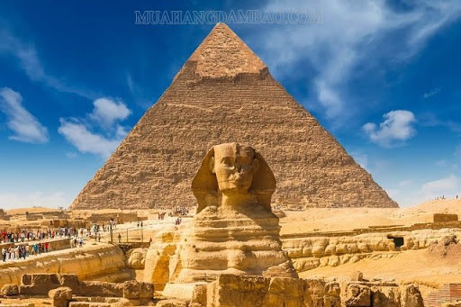
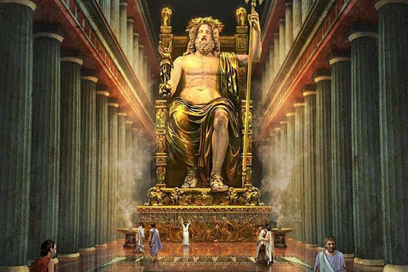
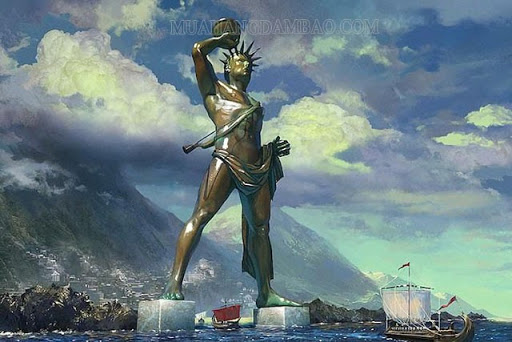
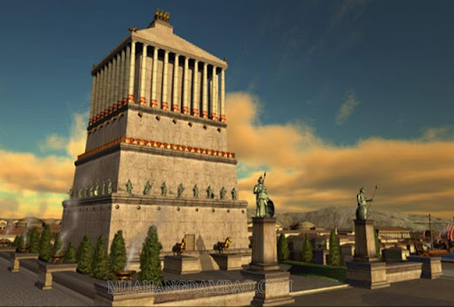
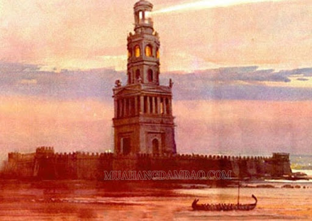
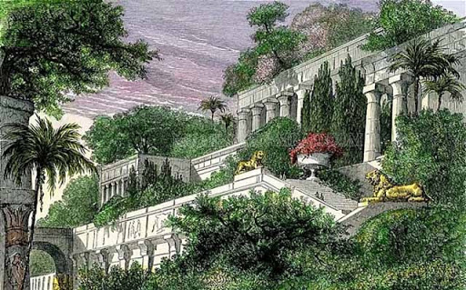
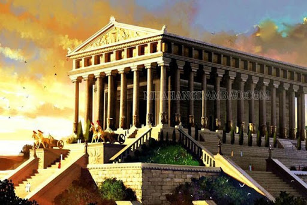

Danh sách 21 cầu thủ Man Utd hành quân tới Camp Nou:
Đại kim tự tháp Giza (Ai Cập)
Đây là công trình duy nhất trong 7 kỳ quan thế giới cũ còn tồn tại đến ngày nay. Khoảng năm 2560 TCN, Pharaoh Ai Cập Khufu đã ra lệnh xây dựng khu lăng mộ của mình bao gồm 3 kim tự tháp chính và các kim tự tháp vệ tinh ở Giza.

Một điều khó tin là kim tự tháp này được xây dựng hoàn toàn bằng sức người với khoảng 800.000 người trong 20 năm, tức là trung bình mỗi phút, những người nô lệ phải xếp được 4 tấm đá vôi (nặng từ 2-5 tấn).
Công trình bằng đá khổng lồ này cao 146m, diện tích bề mặt khoảng 1.300 m2 với tổng khối lượng ước tính 5,9 triệu tấn. Độ nghiêng của các mặt bên khoảng 51,5 độ với chiều cao là 195m, 4 mặt của Kim tự tháp nhìn về các hướng: chính Bắc, chính Nam, chính Đông và chính Tây.
Đây được coi là công trình nhân tạo cao nhất thế giới trong suốt hơn 4 thiên niên kỷ.
Tượng thần Zeus ở Olympia (Hy Lạp)
Bức tượng thần Zeus vàng khổng lồ được xây dựng để tôn vinh các kỳ thi Olympic đầu tiên, bắt nguồn từ thành phố cổ Olympia.

Bức tượng này được hoàn thành vào khoảng năm 432 TCN, cao 12m, rộng 7m, khắc họa vị thần ngồi trên ngai vàng bằng gỗ ngọc nạm với một tay cầm vương trượng hình chim đại bàng tượng trưng cho quyền lực tối cao, một tay cầm tượng thần Victory có cánh tượng trưng cho chiến thắng đều được làm từ ngà voi và kim loại quý giá. Trên đầu đội vòng hoa ôliu, chân đặt lên một chiếc ghế lớn.
Theo nhiều nhà sử học, tượng thần Zeus đã được chuyển đến Constantinople (Istanbul) ở Thổ Nhĩ Kỳ, sau đó bị thiêu cháy.
Tượng thần Mặt trời Rhodes (Hy Lạp)
Đây là công trình có thời gian tồn tại ngắn nhất trong 7 kỳ quan của thế giới cổ đại. Bức tượng này khắc họa vị thần bảo hộ của thành Rhodes – thần mặt trời Helios, đã giúp thành phố này thoát khỏi cuộc bao vây của vua Demetrios I Poliorcetes xứ vào năm 305 TCN.

Sau 12 năm xây dựng, bức tượng được hoàn thành vào năm 282 TCN cao 33m, được làm bằng đá và sắt với bề ngoài bằng đồng nhưng đã bị sụp đổ trong một trận động đất vào 56 năm sau đó.
Lăng mộ Mausoleum (Thổ Nhĩ Kỳ)
Đây là lăng mộ được nữ hoàng Artemisia II xây dựng cho chồng mình là vua Mausolus của Caria vào khoảng năm 370 – 350 TCN.

Lăng mộ này được thiết kế và xây dựng nhờ bàn tay của một kiến trúc sư nổi tiếng Hy Lạp tại thành phố Halicarnassus với độ dài 40m, cao 45m và 1.200 lao động làm việc liên tục trong 17 năm. Phòng chôn cất ở trung tâm được trang trí bằng vàng, còn bên ngoài được tô điểm bằng trụ gạch đá cầu kỳ và các tác phẩm điêu khắc.
Ngọn hải đăng Alexandria (Ai Cập)
Công trình này được xây dựng trên một hòn đảo nhỏ của Pharos từ năm 285 và 247 TCN với chiều cao 117m, gồm 3 tầng.

Công trình này được xây dựng trên một hòn đảo nhỏ của Pharos từ năm 285 và 247 TCN với chiều cao 117m, gồm 3 tầng.
Công trình này tồn tại trong hơn 1.500 năm trước khi bị phá hủy nghiêm trọng bởi động đất vào năm 1303 và 1323.
Vườn treo Babylon (Iraq)
Tương truyền, vườn treo được vua Nebuchadrezzar II xây dựng năm 603 TCN để thỏa nỗi nhớ quê hương xứ Medes của người vợ.

Trong khu vườn này có một hệ thống đài phun nước với hai bánh xe lớn được liên kết bằng dây xích có gắn thùng gỗ. Khi bánh xe quay, dây xích và thùng nước sẽ chuyển động đưa nước từ bể phía dưới lên trên cao để tưới cây. Để thực hiện được điều này, các nô lệ phải luân phiên đưa nước từ dòng sông Euphrates lên khu vườn.
Hiện, các nhà sử học và khảo cổ học vẫn chưa thể xác định được vị trí chính xác của khu vườn này
Đền Artemis (Thổ Nhĩ Kỳ)
Đây là đền thờ dành riêng cho nữ thần Hy Lạp Artemis được hoàn thành khoảng 550 TCN tại thành phố cổ Ephesus, do kiến trúc sư Chersiphron và con là Metagenes xây dựng.

Ngôi đền này còn được gọi là đền thờ Diana, dài 115m, rộng 55m, bao gồm 120 cột đá, mỗi cột cao 20m và được xây dựng từ đá cẩm thạch.
Vào năm 356 TCN, Herostratus đã đốt cháy ngôi đền với mong muốn trở thành người bất tử. Vào năm 262, người Goths đã đốt đền lần thứ hai và đến năm 401, ngôi đền lại bị phá hủy bởi các nhà Kitô giáo. Hiện nay chỉ còn phần nền và một số phần khác của ngôi đền thứ hai tồn tại.